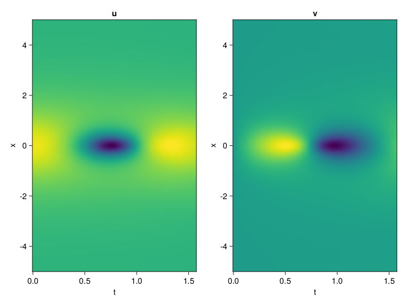
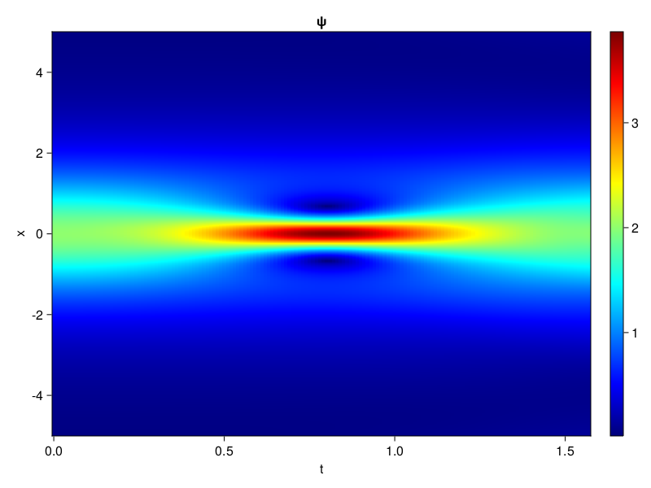
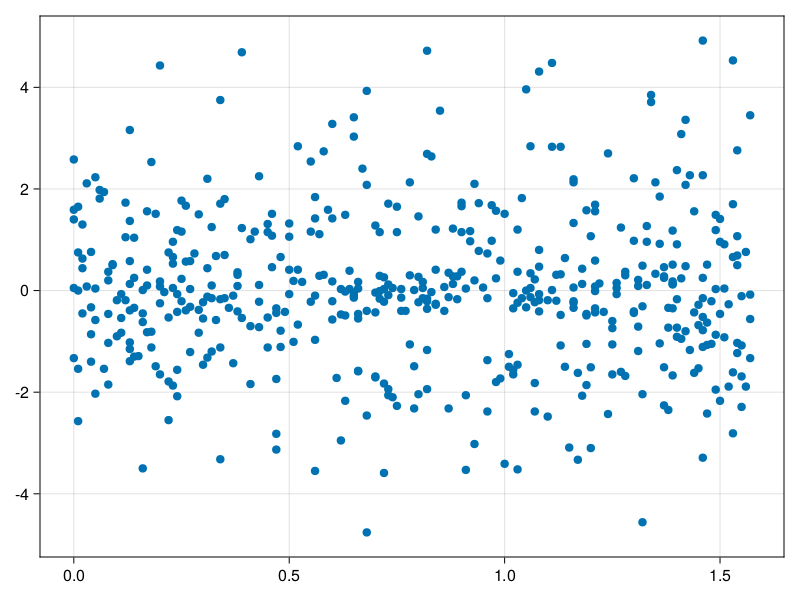

Schrödinger equation
The nonlinear Shrödinger equation is given by
\[\mathrm{i} \partial_t \psi=-\frac{1}{2} \sigma \partial_{x x} \psi-\beta|\psi|^2 \psi\]
Let $\sigma=\beta=1, \psi=u+v i$, the equation can be transformed into a system of partial differential equations
using ModelingToolkit, IntervalSets, Sophon, CairoMakie
using Optimization, OptimizationOptimJL
@parameters x,t
@variables u(..), v(..)
Dₜ = Differential(t)
Dₓ² = Differential(x)^2
eqs=[Dₜ(u(x,t)) ~ -Dₓ²(v(x,t))/2 - (abs2(v(x,t)) + abs2(u(x,t))) * v(x,t),
Dₜ(v(x,t)) ~ Dₓ²(u(x,t))/2 + (abs2(v(x,t)) + abs2(u(x,t))) * u(x,t)]
bcs = [u(x, 0.0) ~ 2sech(x),
v(x, 0.0) ~ 0.0,
u(-5.0, t) ~ u(5.0, t),
v(-5.0, t) ~ v(5.0, t)]
domains = [x ∈ Interval(-5.0, 5.0),
t ∈ Interval(0.0, π/2)]
@named pde_system = PDESystem(eqs, bcs, domains, [x,t], [u(x,t),v(x,t)])\[ \begin{align} \frac{\mathrm{d}}{\mathrm{d}t} u\left( x, t \right) =& - \frac{1}{2} \frac{\mathrm{d}}{\mathrm{d}x} \frac{\mathrm{d}}{\mathrm{d}x} v\left( x, t \right) - \left( \left|u\left( x, t \right)\right|^{2} + \left|v\left( x, t \right)\right|^{2} \right) v\left( x, t \right) \\ \frac{\mathrm{d}}{\mathrm{d}t} v\left( x, t \right) =& \frac{1}{2} \frac{\mathrm{d}}{\mathrm{d}x} \frac{\mathrm{d}}{\mathrm{d}x} u\left( x, t \right) + \left( \left|u\left( x, t \right)\right|^{2} + \left|v\left( x, t \right)\right|^{2} \right) u\left( x, t \right) \end{align} \]
pinn = PINN(u = Siren(2,1; hidden_dims=16,num_layers=4, omega = 1.0),
v = Siren(2,1; hidden_dims=16,num_layers=4, omega = 1.0))
sampler = QuasiRandomSampler(500, (200,200,20,20))
strategy = NonAdaptiveTraining(1,(10,10,1,1))
prob = Sophon.discretize(pde_system, pinn, sampler, strategy)OptimizationProblem. In-place: true
u0: ComponentVector{Float64}(u = (layer_1 = (weight = [-0.1896156668663025 0.35111314058303833; 0.47920525074005127 -0.34035617113113403; … ; -0.08689379692077637 0.3571552038192749; -0.384715735912323 -0.20028001070022583], bias = [0.0; 0.0; … ; 0.0; 0.0;;]), layer_2 = (weight = [-0.18838123977184296 -0.3702766001224518 … -0.5694276094436646 0.10533691942691803; -0.33259323239326477 0.1979561299085617 … -0.5737722516059875 0.5230748057365417; … ; 0.07120291143655777 0.10573214292526245 … -0.3865342438220978 0.17611686885356903; 0.4954565167427063 -0.09544352442026138 … 0.38415297865867615 0.4683854579925537], bias = [0.0; 0.0; … ; 0.0; 0.0;;]), layer_3 = (weight = [0.6031641960144043 -0.09811139851808548 … 0.3492967188358307 0.009366909973323345; -0.6030197739601135 0.49716705083847046 … 0.007638405077159405 0.021487107500433922; … ; 0.26891186833381653 -0.30625423789024353 … -0.020016876980662346 0.5004323124885559; 0.000730880768969655 -0.046572260558605194 … 0.25866368412971497 0.5313982367515564], bias = [0.0; 0.0; … ; 0.0; 0.0;;]), layer_4 = (weight = [0.15470612049102783 0.39558425545692444 … 0.07368441671133041 -0.3216657340526581; 0.19827163219451904 0.5987968444824219 … 0.39061781764030457 -0.3895155191421509; … ; -0.3085227906703949 -0.20543116331100464 … -0.38463813066482544 -0.5297509431838989; 0.007093018386512995 0.22679948806762695 … 0.5523114204406738 -0.36130067706108093], bias = [0.0; 0.0; … ; 0.0; 0.0;;]), layer_5 = (weight = [0.2846226692199707 -0.5758933424949646 … -0.5827306509017944 -0.46724358201026917], bias = [0.0;;])), v = (layer_1 = (weight = [-0.3324861526489258 0.24551904201507568; 0.28757840394973755 0.13388246297836304; … ; 0.4295404553413391 0.3230293393135071; -0.013828694820404053 -0.2387217879295349], bias = [0.0; 0.0; … ; 0.0; 0.0;;]), layer_2 = (weight = [-0.449489563703537 0.41618645191192627 … -0.53415846824646 -0.2625263035297394; -0.22864684462547302 -0.1378384828567505 … 0.45054420828819275 -0.508384108543396; … ; 0.4904135763645172 -0.47529420256614685 … -0.25950145721435547 -0.34286922216415405; -0.4020615220069885 -0.483508825302124 … 0.18874390423297882 -0.4849148690700531], bias = [0.0; 0.0; … ; 0.0; 0.0;;]), layer_3 = (weight = [-0.11017663031816483 -0.14012032747268677 … 0.07656896114349365 -0.23844416439533234; 0.3377145826816559 -0.22635601460933685 … -0.283209890127182 0.47453662753105164; … ; -0.1706908941268921 -0.1038045659661293 … -0.5931495428085327 0.3648874759674072; 0.09552163630723953 -0.28418099880218506 … 0.5604766011238098 0.47389742732048035], bias = [0.0; 0.0; … ; 0.0; 0.0;;]), layer_4 = (weight = [-0.5659934282302856 0.4721570312976837 … 0.018964868038892746 -0.5060431957244873; 0.5427999496459961 0.5727832317352295 … -0.5074489712715149 0.07702258229255676; … ; 0.3170715868473053 0.3404524028301239 … -0.10541991889476776 -0.14214594662189484; 0.3054150938987732 0.1558406949043274 … -0.0916099101305008 0.30658259987831116], bias = [0.0; 0.0; … ; 0.0; 0.0;;]), layer_5 = (weight = [0.13458630442619324 0.5420675277709961 … -0.10266342014074326 0.5428807139396667], bias = [0.0;;])))Now we train the neural nets and resample data while training.
function train(pde_system, prob, sampler, strategy, resample_period = 500, n=10)
bfgs = BFGS()
res = Optimization.solve(prob, bfgs; maxiters=2000)
for i in 1:n
data = Sophon.sample(pde_system, sampler)
prob = remake(prob; u0=res.u, p=data)
res = Optimization.solve(prob, bfgs; maxiters=resample_period)
end
return res
end
res = train(pde_system, prob, sampler, strategy)u: ComponentVector{Float64}(u = (layer_1 = (weight = [-0.46095067241653104 0.42620210182170687; 0.7993682228963079 0.03414966169884282; … ; 0.24089197438226279 0.6426807652193013; -0.31827054754760875 -0.060852507565471795], bias = [0.12265298076598917; 0.0039841816632878845; … ; 0.16374526586504942; 0.05768623612865593;;]), layer_2 = (weight = [-0.6280434614578088 -0.1207783489473376 … -1.0362268453474954 0.08846456653292098; -0.04582907216269763 0.323227297583273 … -0.2370635807295296 0.5173549491888836; … ; -0.6039075796857595 0.33944639619103406 … -0.731906139763241 0.3353865923663026; 0.3625804369771332 -0.13480409907642923 … 0.3360857627370183 0.38612132224455453], bias = [-0.24869119208421317; -0.06169059144511974; … ; -0.1208981652975954; -0.03609892130605416;;]), layer_3 = (weight = [0.5948317653722672 -0.016461474488498634 … 0.3276406766356123 -0.26222781813174517; -0.010267582550063811 0.3884305557754669 … 0.425080281216409 0.05212697735914586; … ; 0.09862210911720083 -0.04734302981321264 … -0.8173788466014408 0.7247238877146056; 0.04398890780120503 0.056421534039617624 … 0.051943485539433176 0.47796514175081234], bias = [-0.2924385261435855; -0.23906745341065275; … ; -0.2306755242539889; 0.07226889509131226;;]), layer_4 = (weight = [0.2948531635973843 0.5301064189301196 … 0.2328105950353746 -0.001418248422048888; -0.03997740806821681 0.3468296612968009 … -0.24233722558111917 0.017693934373225747; … ; -0.35443055450251687 -0.3195187260193213 … -0.8455527565353077 -0.6206381105796668; -0.22927459286885332 0.1382901695004809 … 0.31024784043302145 -0.09131100025645919], bias = [-0.1840491181863085; 0.11240871391102726; … ; 0.44682540456360953; -0.09256024225609523;;]), layer_5 = (weight = [0.26398280347188896 -0.8651500593948196 … -0.6424133481903398 -0.9017596430251883], bias = [-0.17496534841465647;;])), v = (layer_1 = (weight = [-0.32793015346990234 0.40053573722773955; 0.2790862425121698 0.09944937121508542; … ; 0.3767105037516935 0.1030943597857018; 0.3843700091679547 -0.6461681867715038], bias = [-0.013243684713440814; 0.03930513750506203; … ; 0.04455154089427521; 0.4392747604688506;;]), layer_2 = (weight = [-0.5608182806058316 0.4414391024346122 … -0.5024486652483996 -0.3175239861088641; -0.6172841276091393 0.037890607489009256 … 0.6275416499336478 -0.2924835736771651; … ; 0.625670133474865 -0.5140333768747533 … -0.41506650168973147 -0.6487198400989981; -0.29081389294574655 -0.3032065960857832 … 0.409701294233645 -0.716764449308733], bias = [-0.19578316002102372; 0.04861590564172605; … ; -0.10403137768940418; -0.136219488402714;;]), layer_3 = (weight = [-0.04194408811383698 -0.035763231473016834 … 0.5531728155336048 -0.7099852470935033; 0.34198877732413674 -0.299097860386372 … 0.06411336175342795 0.3497549539459923; … ; -0.3609931739169598 0.5545717112586224 … -0.24873270858458252 0.7181651096338545; 0.011486925896173505 -0.04706936857278311 … 0.08228982438351876 0.9413287153136782], bias = [-0.23582365004109154; -0.05984698861923709; … ; -0.06947178227439108; 0.45088310167521795;;]), layer_4 = (weight = [-0.7963649650721134 -0.10270430899718856 … 0.2136383700203858 -0.10008035655253823; 0.6858833464826234 0.022422756478101342 … -0.5193087871994232 -0.14350179784662392; … ; 0.41048830429058586 0.274901922565392 … -0.16446026777937012 -0.24135788791135027; 1.0756693933682726 0.4127626465697493 … -0.45822043025385184 0.20863175979711723], bias = [0.2838373440777825; -0.17701297520574943; … ; -0.020634946993898763; 0.4517371867657798;;]), layer_5 = (weight = [0.5378567468744778 0.883089390417507 … 0.12706298566296517 1.081432378724203], bias = [-0.3082666288235895;;])))phi = pinn.phi
ps = res.u
xs, ts= [infimum(d.domain):0.01:supremum(d.domain) for d in pde_system.domain]
u = [sum(phi.u(([x,t]), ps.u)) for x in xs, t in ts]
v = [sum(phi.v(([x,t]), ps.v)) for x in xs, t in ts]
ψ = @. sqrt(u^2+ v^2)
axis = (xlabel="t", ylabel="x", title="u")
fig, ax1, hm1 = heatmap(ts, xs, u', axis=axis)
ax2, hm2= heatmap(fig[1, end+1], ts, xs, v', axis= merge(axis, (; title="v")))
display(fig)
axis = (xlabel="t", ylabel="x", title="ψ")
fig, ax1, hm1 = heatmap(ts, xs, ψ', axis=axis, colormap=:jet)
Colorbar(fig[:, end+1], hm1)
display(fig)
Customize Sampling
Bascially any sampling method is supportted. For example we can sample data according to the predicted solution.
using StatsBase
data = vec([[x, t] for x in xs, t in ts])
wv = vec(ψ)
new_data = wsample(data, wv, 500)
new_data = reduce(hcat, new_data)
fig, ax = scatter(new_data[2,:], new_data[1,:])
prob.p[1] = new_data
prob.p[2] = new_data
prob = remake(prob; u0 = res.u)
# res = Optimization.solve(prob, bfgs; maxiters=1000)OptimizationProblem. In-place: true
u0: ComponentVector{Float64}(u = (layer_1 = (weight = [-0.46095067241653104 0.42620210182170687; 0.7993682228963079 0.03414966169884282; … ; 0.24089197438226279 0.6426807652193013; -0.31827054754760875 -0.060852507565471795], bias = [0.12265298076598917; 0.0039841816632878845; … ; 0.16374526586504942; 0.05768623612865593;;]), layer_2 = (weight = [-0.6280434614578088 -0.1207783489473376 … -1.0362268453474954 0.08846456653292098; -0.04582907216269763 0.323227297583273 … -0.2370635807295296 0.5173549491888836; … ; -0.6039075796857595 0.33944639619103406 … -0.731906139763241 0.3353865923663026; 0.3625804369771332 -0.13480409907642923 … 0.3360857627370183 0.38612132224455453], bias = [-0.24869119208421317; -0.06169059144511974; … ; -0.1208981652975954; -0.03609892130605416;;]), layer_3 = (weight = [0.5948317653722672 -0.016461474488498634 … 0.3276406766356123 -0.26222781813174517; -0.010267582550063811 0.3884305557754669 … 0.425080281216409 0.05212697735914586; … ; 0.09862210911720083 -0.04734302981321264 … -0.8173788466014408 0.7247238877146056; 0.04398890780120503 0.056421534039617624 … 0.051943485539433176 0.47796514175081234], bias = [-0.2924385261435855; -0.23906745341065275; … ; -0.2306755242539889; 0.07226889509131226;;]), layer_4 = (weight = [0.2948531635973843 0.5301064189301196 … 0.2328105950353746 -0.001418248422048888; -0.03997740806821681 0.3468296612968009 … -0.24233722558111917 0.017693934373225747; … ; -0.35443055450251687 -0.3195187260193213 … -0.8455527565353077 -0.6206381105796668; -0.22927459286885332 0.1382901695004809 … 0.31024784043302145 -0.09131100025645919], bias = [-0.1840491181863085; 0.11240871391102726; … ; 0.44682540456360953; -0.09256024225609523;;]), layer_5 = (weight = [0.26398280347188896 -0.8651500593948196 … -0.6424133481903398 -0.9017596430251883], bias = [-0.17496534841465647;;])), v = (layer_1 = (weight = [-0.32793015346990234 0.40053573722773955; 0.2790862425121698 0.09944937121508542; … ; 0.3767105037516935 0.1030943597857018; 0.3843700091679547 -0.6461681867715038], bias = [-0.013243684713440814; 0.03930513750506203; … ; 0.04455154089427521; 0.4392747604688506;;]), layer_2 = (weight = [-0.5608182806058316 0.4414391024346122 … -0.5024486652483996 -0.3175239861088641; -0.6172841276091393 0.037890607489009256 … 0.6275416499336478 -0.2924835736771651; … ; 0.625670133474865 -0.5140333768747533 … -0.41506650168973147 -0.6487198400989981; -0.29081389294574655 -0.3032065960857832 … 0.409701294233645 -0.716764449308733], bias = [-0.19578316002102372; 0.04861590564172605; … ; -0.10403137768940418; -0.136219488402714;;]), layer_3 = (weight = [-0.04194408811383698 -0.035763231473016834 … 0.5531728155336048 -0.7099852470935033; 0.34198877732413674 -0.299097860386372 … 0.06411336175342795 0.3497549539459923; … ; -0.3609931739169598 0.5545717112586224 … -0.24873270858458252 0.7181651096338545; 0.011486925896173505 -0.04706936857278311 … 0.08228982438351876 0.9413287153136782], bias = [-0.23582365004109154; -0.05984698861923709; … ; -0.06947178227439108; 0.45088310167521795;;]), layer_4 = (weight = [-0.7963649650721134 -0.10270430899718856 … 0.2136383700203858 -0.10008035655253823; 0.6858833464826234 0.022422756478101342 … -0.5193087871994232 -0.14350179784662392; … ; 0.41048830429058586 0.274901922565392 … -0.16446026777937012 -0.24135788791135027; 1.0756693933682726 0.4127626465697493 … -0.45822043025385184 0.20863175979711723], bias = [0.2838373440777825; -0.17701297520574943; … ; -0.020634946993898763; 0.4517371867657798;;]), layer_5 = (weight = [0.5378567468744778 0.883089390417507 … 0.12706298566296517 1.081432378724203], bias = [-0.3082666288235895;;])))